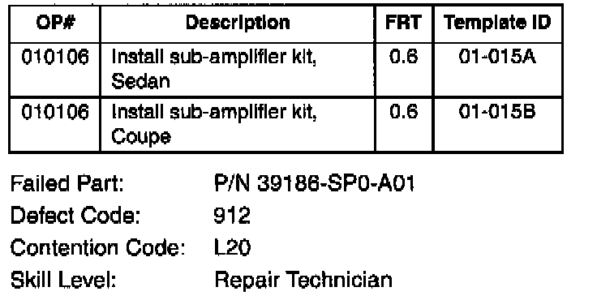
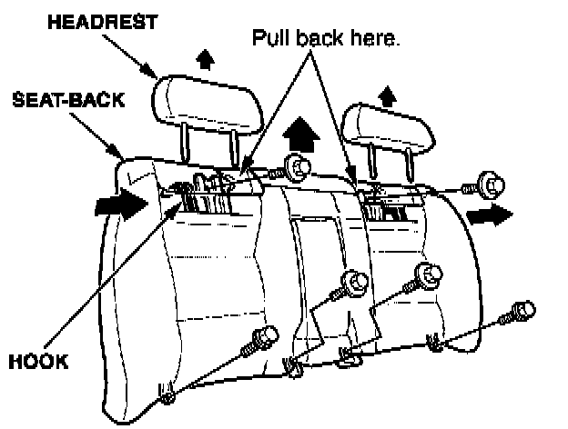
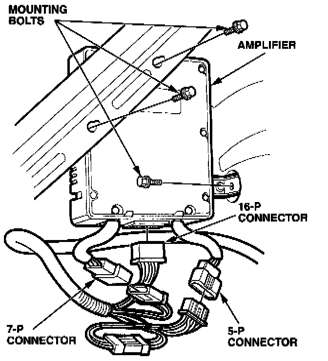
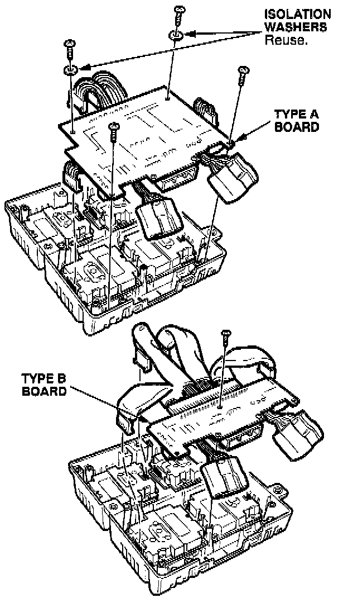
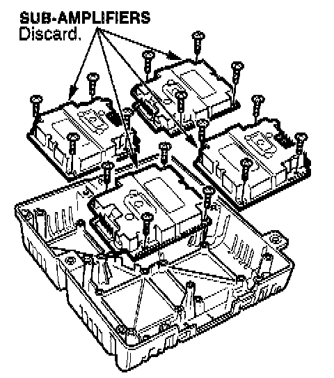
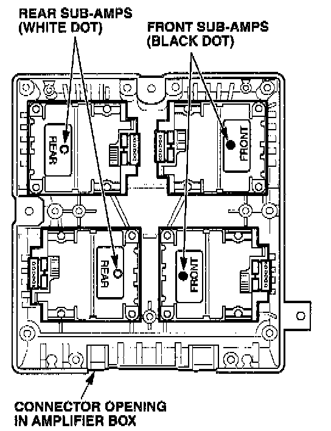
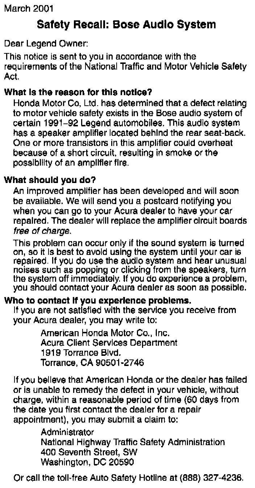
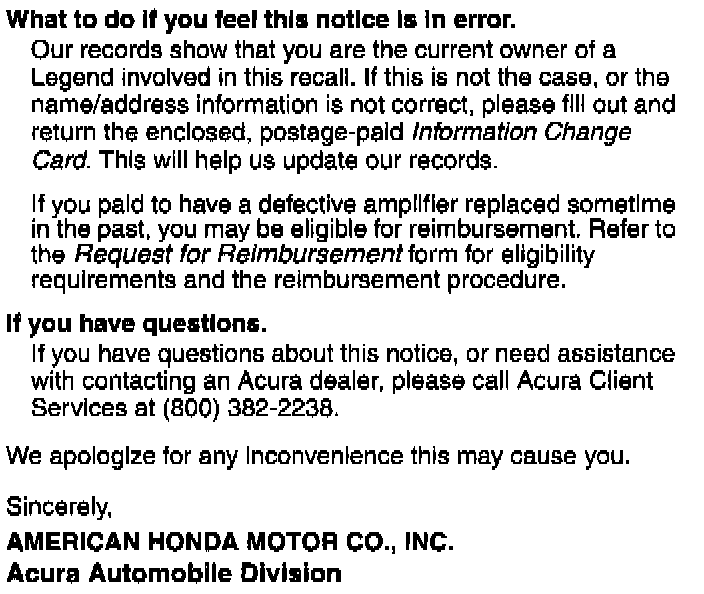

Recall - Amplifier Replacement
01-015March 19, 2001
Applies To:
1991-92 Legend LS Coupe and Sedan - ALL
Safety Recall: Bose Audio Amplifiers
BACKGROUND
Moisture may get into the amplifier box mounted behind the rear seat-back, causing a transistor to overheat. This can result in smoke and, possibly, a small tire.
CUSTOMER NOTIFICATION
All owners of affected vehicles will be mailed a notification of this recall. An example of the notification is at the end of this service bulletin.
CORRECTIVE ACTION
Replace the four sub-amplifiers in the amplifier box.
PARTS INFORMATION
Sub-amplifier Kit (includes four sub-amplifiers with heat sinks):
Legend Sedan: P/N 06391-SP0-308
Legend Coupe: P/N 06391-SP1-308

WARRANTY CLAIM INFORMATION
REPAIR PROCEDURE
1. Remove the rear seat bottom and seat-back.

2. Remove the three amplifier box mounting bolts. Disconnect the three harness connectors, then remove the box from the vehicle.

3. Remove the 10 mounting screws from the cover of the amplifier box. Remove the cover. These screws have a 1/4" hex head. If you have only metric wrenches, use the handle of a removable-blade screwdriver. This should have a 1/4" hex.

4. Remove the mounting screw(s) from the I/O printed circuit board. The type B board has one mounting screw, and the type A board has four mounting screws.

5. Disconnect the electrical connectors from the four sub-amplifiers. Remove the mounting screws, and remove the sub-amplifiers.

6. Make sure the amplifier box is facing as shown. Each replacement sub-amplifier has a white dot or a black dot to show if it is for the front or the rear speakers. Install the sub-amplifiers with a white dot on the left side of the box. Install the sub-amplifiers with a black dot on the right side.
7. Mount the sub-amplifiers with the original screws. Reconnect the electrical connectors.
8. Reinstall the I/O printed circuit board. If it is a type A board, make sure you have the isolation washers in the proper locations.
9. Install the cover on the amplifier box.
10. Reinstall the amplifier box in the vehicle. Connect the three harness connectors.
11. Install the rear seat-back and seat bottom.
12. Center-punch a completion mark above the third character (4) of the engine compartment VIN.


Example of Customer Letter

Disclaimer